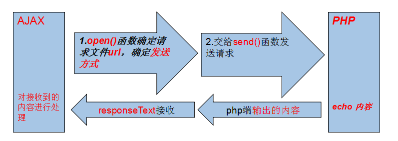

JS&JQ操作AJAX
- 
-
一、JS操作ajax：
-
(1)post方式：
var send = document.getElementById('send'); send.onclick=function() { //请求的5个阶段，对应readyState的值: //0: 未初始化，send方法未调用； //1: 正在发送请求，send方法已调用； //2: 请求发送完毕，send方法执行完毕； //3: 正在解析响应内容； //4: 响应内容解析完毕； var data = 'name=yang'; var xhr = new XMLHttpRequest(); //创建一个ajax对象 xhr.onreadystatechange = function(event){ //对ajax对象进行监听 if(xhr.readyState == 4){ //4表示解析完毕 if(xhr.status == 200){ //200为正常返回 console.log(xhr.responseText) } } }; xhr.open('POST','test.php',true); //建立连接，参数一：发送方式，二：请求地址，三：是否异步，true为异步 xhr.setRequestHeader('Content-type','application/x-www-form-urlencoded'); //POST数据传送需要向请求添加HTTP头 xhr.send(data); //发送 }; send方法: send(string) 将请求发送到服务器。 string：仅用于POST请求。
**后台接收数据：<?php $user=$_POST; echo JSON_encode($user); ?> -
(2)get方式：
var send = document.getElementById('send'); send.onclick=function() { var data = 'name=yang&sex=man'; var xhr = new XMLHttpRequest(); xhr.onreadystatechange = function(event) { if(xhr.readyState == 4) { if(xhr.status == 200) { console.log(xhr.responseText) } } }; xhr.open('POST', 'test.php?'+data, true); xhr.send(null); }; <?php $user=$_GET; echo JSON_encode($user); ?>
-
(1)post方式：
-
二、JQ操作ajax：
$.ajax({ url:'/test1.php', type:'POST', //GET async:true, //或false,是否异步 data:{ name:'yang', age:25 }, timeout:5000, //超时时间 dataType:'json', //返回的数据格式：json/xml/html/script/jsonp/text beforeSend:function(xhr){ console.log(xhr) console.log('发送前') }, success:function(data,textStatus,jqXHR){ console.log(data) console.log(textStatus) console.log(jqXHR) }, error:function(xhr,textStatus){ console.log('错误') console.log(xhr) console.log(textStatus) }, complete:function(){ console.log('结束') } }) -
三、Ajax传送和接收数据json格式的转换:
-
(1).form数据的序列化：
$('#submit').click(function(){ $('#form').serialize(); //会根据input里面的name，把数据序列化成字符串；eg：name=yang $('#form').serializeArray(); //会根据input里面的name，把数据序列化成数组；eg：[object] //*注意：没有name会获取不到值 }); -
(2)JS中的数据格式转换方法：
-
2-1.JSON.parse()【从一个字符串中解析出json对象】
//定义一个字符串 var data='{"name":"goatling"}'
//解析成对象 JSON.parse(data)
结果是：{name: "goatling"} -
2-2.JSON.stringify()【从一个对象中解析出字符串】
//定义一个对象 var data={name:'goatling'}
/解析成字符串 JSON.stringify(data)
结果是：'{"name":"goatling"}'
-
2-1.JSON.parse()【从一个字符串中解析出json对象】
-
(3)PHP中的数据格式转换方法：
JSON_encode() 该函数主要用来将数组和对象，转换为 字符串型json格式 。
***当我们从后台php拿数据时，
（1）先在后台用JSON_encode()把数据转换成字符串型json格式，若直接运用则无需成转换其他。
（2）若是要后台返回数据的某一条，则先在后台用JSON_encode()把数据转换成字符串型json格式，
再在前台js脚本中用JSON.parse把数据转换成真正的json对象，从而可以用 . 获取对象中属性，
最后再把用JSON.stringify把数据转换成字符串数据。
-
(1).form数据的序列化：
------->>本·文·完